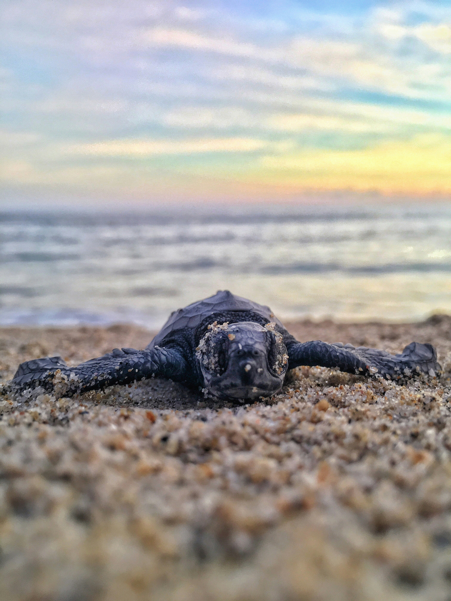
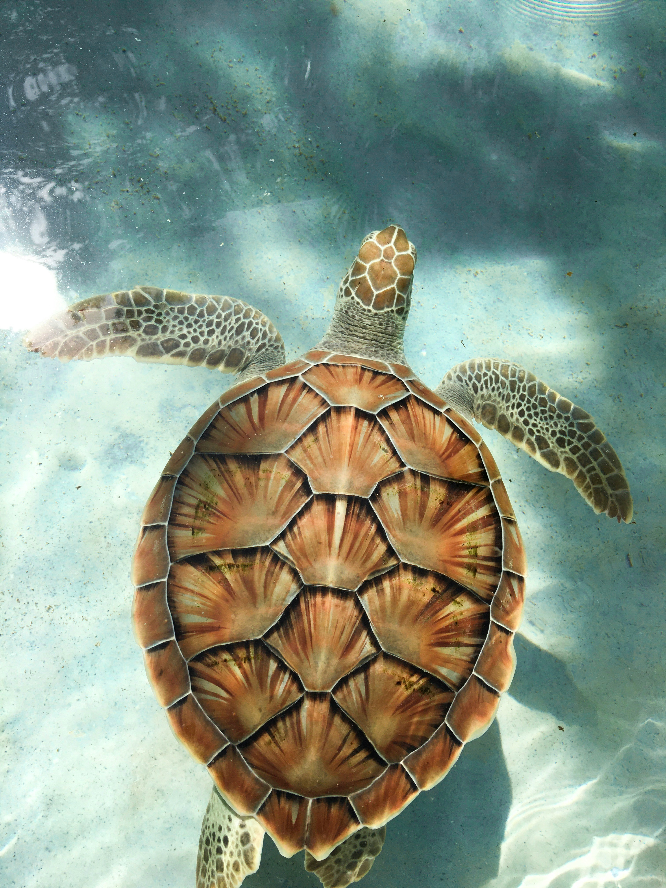

Extinction of Turtles
the extinction of turtles is becoming a current leading issue in the maintence of marine ecosystems, and we play a vital role in the protection of these species.

Why are turtles important?
Turtles are integral keystone species through the performance of ecological roles like keeping populations of other sea-life in check through the food chain, protecting coral reefs, providing nutrients to the sand of beaches they nest on and many other roles that contribute to the survival and preservation of ecosystems.
Extinction Rates
Turtles have been alive on earth for over 160 milennia, but approximately 61% of all 356 turtle species are now close to extinction, being either already extinct or are currently threatened. Many species are threatened by illegal trade, unsustainable harvest, pollution, habitat loss, climate change, bycatch, and disease.

Lost species
- Fernandina Galápagos Tortoise is a nearly extinct species, thought to be lost for 112 years, was rediscovered in 2019 on an expedition to Fernandina island.
- The Viesca Mud Turtle is another species that has been lost since 1961, and has since been thought to be extinct.
- The Nubian Flapshell Turtle has been last confirmed to be seen in 2000, but has been listed as critically endangered with no successful recovery apart from unconfirmed sightings.
- The Pinta Island Tortoise was last seen in 2012 on the Galápagos islands, but is now extinct.
- The Floreana Island Tortoise was last seen in 1850, but now considered to be extinct.
Critically Endangered Species
- The Radiated Tortoise is extinct in approximately 40% of areas where it previously lived, with habitat loss and poaching being the main cause of their extinction.
- The painted terrapin is one of the world's 25 most endangered fresh water turtles, and palm oil harvesting operations are a serious threat to their habitat.
- The Angonoka Tortoise is critically endangered with an estimate of 200 adults left in the wild, but the real number may be as low as 100. The species is highly threatened by poachers in the illegal pet trade, looking for up to tens of thousands of dollars for one adult.
- The Roti Snake-necked Turtle is another turtle highly valued in the international pet trade, and has been threatened to near extinction due to it.